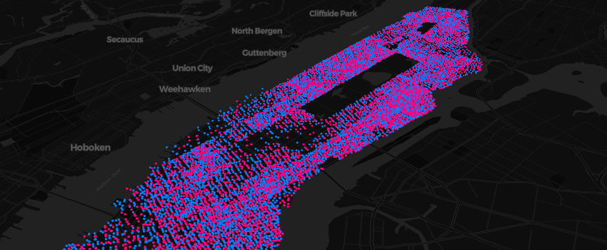

Mapboxer makes Mapbox GL JS, an open source JavaScript library that uses WebGL to render interactive maps, available within R via the htmlwidgets package.

Installation
Install the release version from CRAN with:
install.packages("mapboxer")Install the development version from GitHub with:
# install.packages("remotes")
remotes::install_github("crazycapivara/mapboxer")Usage
library(mapboxer)
map <- motor_vehicle_collisions_nyc %>%
dplyr::mutate(
color = ifelse(injured == 0, "yellow", "red")
) %>%
as_mapbox_source() %>%
mapboxer(
center = c(-73.9165, 40.7114),
zoom = 10
) %>%
add_navigation_control() %>%
add_circle_layer(
circle_color = c("get", "color"),
circle_blur = 1,
circle_stroke_color = "red",
circle_stroke_width = 1,
popup = "<p>{{date}} {{time}}</p><p>Number of persons injured: {{injured}}</p>"
)
if (interactive()) mapBy default mapboxer uses Carto vector styles as basemaps. It is also possible to use raster tiles or a background color.
If you want to use styles from Mapbox it is recommended that you store your API token in an environment vatiable called MAPBOX_API_TOKEN.